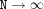

Get random orientations in 3D from a uniform orientation distribution.
vecs = sphrand(N) vecs = sphrand(N,nOctants) [phi,theta] = sphrand(...) [x,y,z] = sphrand(...)
sphrand does in a random way what sphgrid does more systematically. It calculates N points on the unit sphere. In the limit of
 these points are evenly
distributed, since the underlying distribution is a uniform one.
If nOctants is specified, it determines the number of octants over which to generate the points. It can be 1 (one octant), 2 (two octants, part of upper hemisphere with y>0), 4 (upper hemisphere) or 8 (whole sphere).
The result containing the set of points on the sphere can be in one of three forms:
vecs, a 3xN array of cartesian
vectors of unit length pointing from the origin to the sphere surface.
x, y, and z, the three cartesian coordinates of the unit vectors.
phi and theta, the polar angles for
the points on the sphere. phi denotes the counterclockwise angle between the x axis and the projection of a vector onto the xy plane (azimuth), theta is the angle between a vector and the z axis (colatitude, elevation complement).
Both theta and phi are in radians.
The command
[phi,theta] = sphrand(10000,8);
generates 10000 points randomly distributed over the whole sphere. The plot
plot(phi*180/pi,theta*180/pi,'.');
set(gca,'YDir','reverse'); axis tight
xlabel('phi'); ylabel('theta');
shows that in a theta vs. phi projection
there is reduced point density around the north and south poles.
ang2vec, vec2ang, sphgrid, sphtri